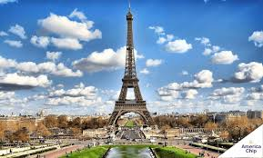
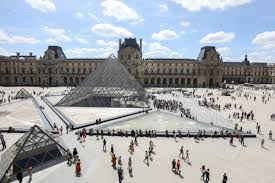
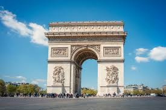

Bem-vindo à página sobre a cidade do amor! Aqui você encontrará informações sobre locais para visitar e curiosidades sobre a cidade.
Locais para Visitar

Torre Eiffel

Museu do Louvre

Arco do Triunfo
Curiosidades
Uma curiosidade interessante sobre Paris é a origem do seu apelido "Cidade da Luz". Muitas pessoas pensam que esse nome vem das luzes brilhantes da Torre Eiffel e das outras atrações turísticas iluminadas à noite. No entanto, o apelido na verdade tem suas raízes no século XVII, durante o Iluminismo. Paris era o centro de ideias e inovações, atraindo intelectuais de todo o mundo, que eram considerados as "luzes" do conhecimento